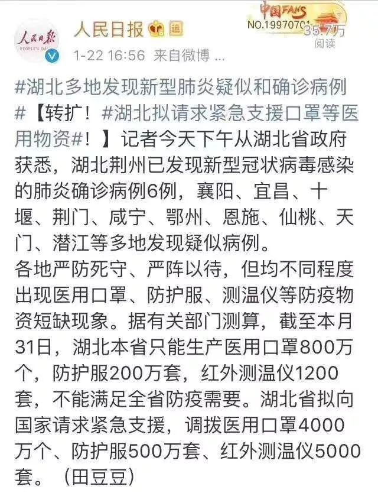
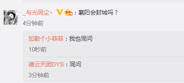
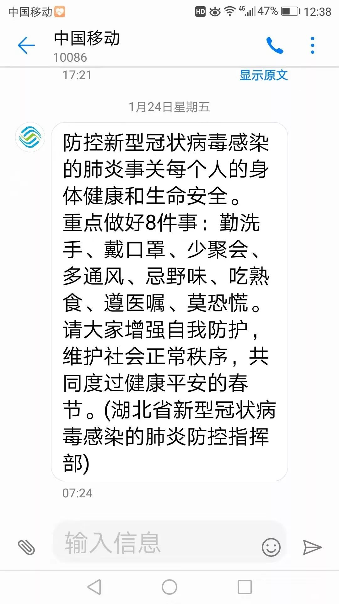

五个武汉人的封城日记｜故事FM
原文链接 备份链接 🎧 点击上方图片，跳转「故事FM」小程序，收听真人讲述。记得添加「我的小程序」，一键收听全部故事哟！ 本来在春节前的最后一期节目里，我预告说 故事FM 会放假一周，节后回来再见。 但是这个春节啊，我们团队都无心过年，大 …

点击上方物质生活参考加星标！
物质生活参考

作者：彭梁洁
来源：物质生活参考（ID：wzshck）
01.
襄阳，距离武汉300多公里，湖北省GDP第二大城市，自古被称为“兵家必争之地”，是《射雕英雄传》里郭靖黄蓉夫妇誓死保卫的地方。最近，作为坚持“不封城”的湖北城市引起关注。
我返回湖北襄阳老家的日期是1月20日，正是全国多地通报出现确诊病例、舆论突然发酵的那天。在此之前，我对新型冠状病毒肺炎的严重性所知甚少。
20日，我跟同伴搭乘北京首都国际机场上午十点多的航班，从青岛转机回襄阳。当天首都机场、青岛机场以及襄阳刘集机场均无体温检测，戴口罩的人寥寥无几。印象非常深刻的是，在青岛机场安检时有个30岁左右的女士排在我前面，口罩严实，手上还缠着类似塑料保鲜膜的东西，大概是为了隔绝病毒，当时我多看了她几眼。
下午我在青岛机场候机的5个多小时，正是舆论迅速发酵的时间段，疫情的消息在微信朋友圈、公众号铺天盖地。三点左右，同伴发给我一个某电商平台购买口罩的链接，告诉我赶紧买，我点进去时已经显示无货，离她下单仅仅过了5分钟。又找了其他商家，均显示断货、或者2月4日以后才能发出，一家可以次日送达的商家价格翻了番，25个N95口罩售价300多，还是立马下单寄到襄阳，担心以后买不到了。
在我的印象中，2003年非典几乎没有影响到襄阳。那年我上初中，学校没有停课，记忆中也没有白醋的味道，当年的灾难放过了我们这座小城。来北京上大学之后，新闻学课堂上将非典作为典型案例研究，我才真正意识到它的可怕。
当年没有吃过非典的苦头，加上长辈们的固执，一开始劝说家人要戴口罩时，我跟很多年轻人一样经历了锲而不舍的努力。回家第二天跟我妈出门，在我的坚持下极不情愿戴上口罩，出门一看，“都没人戴，太闷了”，一把扯了下来。最后事实证明，父母的朋友、同龄人说一句话，要比儿女们说十句话都管用——最后还是一位亲戚的电话发挥了作用。
21日和22日是“真空时段”，舆情发酵之后，始终没有来自本市的权威数据发布，人们只能道听途说，“某某医院，有个人查出来了”。但这两天，大街上戴口罩的人多了起来，至少超过了一半。22日白天出门，交警和公交车司机都做好了防护。
转机发生在22日下午。人民日报官微发布了一条关于湖北疫情状况的消息。这才有了跟进：当晚，湖北省宣布成立新型冠状病毒感染的肺炎疫情防控指挥部，举行新闻发布会；稍后，襄阳市首次通报了感染人数。

从23日开始，我们全家就开始足不出户。那天是多云，站在窗前往外看，太阳偶尔会从云里钻出来一会，施舍一点不太扎实的阳光。说实话，我好几年没有如此密切关注过一个社会事件的动态了。几天以来，信息更新速度之快、接收密度之大，常常让人混淆时间，把几小时前的信息当成是前一天发生的事。坐在沙发上刷最新的消息和前方报道，一下午的时间很快就过去了。
除了等待，我们能做的也就是照顾好自己和家人。
离京之前，我一直在为这个春节回家还要继续工作而头疼，没想到如今，这居然沦落为最不值得担心的一件事了。
02.
“封城吗？”
连续好几天，“襄阳日报”官方微博每发布一条信息，下面的留言只关心这一个问题。

作为一个襄阳人，我经常这样跟别人介绍自己的家乡：诸葛亮故居古隆中在这，郭靖驻守的襄阳城就是这。而现在只需要说，“对，就是还没封的那个地方”。
23日凌晨2点武汉正式宣布“封城”之后，湖北省其他城市紧随其后，或暂停市内公交系统，或关闭对外铁路、长途汽车通道，作为湖北省GDP排名第二的襄阳却迟迟没有动静。在市民们看来，封城已是板上钉钉，无非是早晚的事，只需坐等靴子落地。封城在人们心中，反而提供了一种“安全感”。
24日，大年三十儿，阴雨天气。除夕夜大家庭聚餐计划取消了。
“封城”的传闻在这天晚上开始发酵。晚上六点多，两位朋友先后发来微信告诉我，襄阳今晚零点封城，其中一个说是来自一位警察朋友的消息，随后，朋友圈流传出疑似工作人员关闭火车站的现场照片。
面前是电视屏幕里的春节联欢晚会，我在微博、朋友圈刷消息，我妈在一边跟亲戚们互相语音、视频拜年。2020年除夕的春晚大概是近几年来收视率最高的一届了吧，很多人被困在家，无聊之中只能恢复这一传统；但可能也是人们看得最不走心的一届了，毕竟牵动人心的事太多，春晚只能沦为背景音。回想这届春晚，我只能记起肖战的那张帅脸了。
不知不觉到了零点，还是没有消息。襄阳日报官微在临近零点时发布了一条庆祝新年的消息，上百人留言只想知道：
到底封城吗？能不能给个准信儿？
有人在留言里气急败坏地骂，比气愤更重的情绪是焦虑。
今年的春晚比往年结束得要早一些。考虑到武汉的封城通知是凌晨2点下发，我决定再等一会，但坚持到3点仍然没有动静。窗外滴滴答答的雨声让人心里发紧。太困了，不等了。
第二天上午，官微辟谣，并无封城一说。有人呼吁至少关停市内公交，拦住一部分子女无力劝阻、坚持串门的家长们。
我们家人已经连续四天足不出户了。家里为过年接待客人准备的肉类大概吃几个月都充足，但是蔬菜保质期短，我问我妈，家里的蔬菜还能吃多久，她说两个星期。如果封城，得提前做好准备。
各种“小道消息”满天飞，真假难辨，向人们提供短暂的希望以及自以为的先知。
直到25日晚间，襄阳机场迎来停运的消息。这是来自民航湖北监管局的通知：自26日开始，湖北省内除神龙架机场外，其他共7座民用机场全部停运，其中包括襄阳刘集机场。
几乎同一时间，道路客运也宣布暂停运营——但仅限于长途客车、班车，人们在微博留言中强烈要求暂停的市内交通依然畅行。最新消息是“减半运行”，官方给出理由，保“健康安全”的前提下保“基本运转”。
03.
疫情发展至今，“湖北不只有武汉”相关话题逐渐得到关注。媒体报道主要集中在黄冈，这是湖北省人口第二大市，也是湖北省12个地级市中除武汉之外，确诊人数最多的城市，122例。
从地理位置上看，襄阳位于鄂西北，距鄂东南的武汉300多公里，中间隔着荆门市和孝感市。正常情况下，每天有60多趟车次从襄阳的三个火车站出发开往武汉，时间最短的是1小时13分（G6818），最长的5小时13分（K352）。
虎嗅此前报道，据百度迁徙数据显示，1月16日到1月22日，从武汉流向周边城市人口数量的排名，襄阳从第7位逐渐上升到第4位。
但一些襄阳市民已经开始用“裸奔”来形容自己。
我们所在小区的微信群里发了一份从武汉返回人员的登记表，在微信群通知大家：如果家里有从武汉回来的人员，请大家到门卫处登记报备，除此之外，没有人上门问询；22日，我打算去一家大型超市买东西，在门口看见收银处大排长队，却很少有人戴口罩，瞬间打消了购物的念头；直到24日，我妈的手机才收到一条提醒居民减少外出的短信，来自湖北省肺炎防控指挥部，这也是唯一的一条。


襄阳下辖区县、乡镇的居民心急，拿隔壁河南省作为“管理有方”的范例：抄作业你不会吗？
很多人感觉到有点不对劲了：在25日之前，官方公布的感染通报数据显示，襄阳无一例确诊，49例全为疑似——襄阳不仅成为最晚封城的城市，也是为数不多的、尚未出现首例确诊的城市——在每天湖北省的各市疫情通报中，找不到襄阳的名字。
“到底是没有试剂盒子还是其他原因？为什么其他市都可以确诊但是襄阳作为第二大城市不行？”这是微博留言中除了封城的另一大质疑——没有一例确诊，比确诊人数众多更让人忧虑。
一位市中心三甲医院的朋友告诉我，医院并无检测权，需把样本上报市防疫中心，所以医院并不掌握本院具体确诊人数，要等统一通报。她自己做出的判断是，“本院疑似基本可以算确诊”。
事情最新的进展是，25日公布的数据，襄阳出现首例确诊；26日最新数据显示，8例确诊，疑似病例累计110例。
26日，官方终于正式回应质疑：根据国家有关文件要求，市州首例确诊病例必须由省级疾控中心复核确认之后，才能认定为确诊病例。复核结果返回约需2-3天，这就是我市从公布疑似病例三天后才有确诊病例信息发布的原因。
从第2例开始，不再需要省疾控中心审核确认，本市可自行检测并确认结果。
“确诊病例正在快速增加，但无法判断是由于处理了此前积压未检测的样本，还是事实上的新病例。”我在《中国新闻周刊》一篇文章里看到这句话，来自美国约翰•霍普金斯大学一位科学家。
明天，确诊人数会是多少呢？

△长按二维码，添加物质生活君微信，
回复“粉丝”，进入物质生活粉丝群，
获取独家优质生活参考。

\= 推荐阅读=

这届年轻人，万物皆可“云养”

对上这些暗号，年就到了

逃不开的饭局
- END-

文章已于修改
原文链接 备份链接 🎧 点击上方图片，跳转「故事FM」小程序，收听真人讲述。记得添加「我的小程序」，一键收听全部故事哟！ 本来在春节前的最后一期节目里，我预告说 故事FM 会放假一周，节后回来再见。 但是这个春节啊，我们团队都无心过年，大 …
原文链接 备份链接 各方资源和关注的焦点是武汉，但在周边16座也因疫情而被封闭的城市里，他们正在经历着什么 文 |《财经》记者 房宫一柳 宋玮 黎诗韵 管艺雯 陈晶 余洋洋 实习生 马可欣 张凡 编辑 | 宋玮 1月24日，农历鼠年除夕 …
原文链接 备份链接 以下文章来源于地球青年图鉴 ，作者地青 “此刻的中国版图中，武汉好像是一座孤城，但实际上在这座孤城之内还有无数个孤城，有成千上万个原驻家庭把自己锁在家里，他们表面上安静祥和，心头却有一根线紧绷着。”受访者张恒写道。 …
原文链接 备份链接 “ 父母都是医疗人员，父亲一直在接诊，母亲负责护士相关的所有工作。这几天只回过一趟家，除夕那天，我一个人在家吃年夜饭。 1月23日凌晨两点。 武汉市新型肺炎防控指挥部发布通告，自2020年1月23日10时起，全市城市公 …
原文链接 备份链接 作者 | 薛芳 孙宏超 相欣 安然 马关夏 李越 编辑 | 康晓 出品｜深网·腾讯小满工作室 欢迎下载腾讯新闻APP，阅读更多优质资讯 平平安安就是年。 突袭而至的新病毒能阻止很多中国人在这个春节里团聚，但没有什么能阻 …